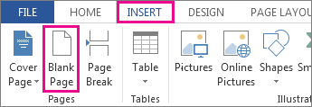
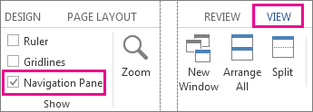

Select Insert > Page Number, and then choose the location and style you want.
If you don't want a page number to appear on the first page, select Different First Page.
If you want numbering to start with 1 on the second page, go to Page Number > Format Page Numbers, and set Start at to 0.
When you're done, select Close Header and Footer or press Esc.
To put a blank page into your Word document, place the cursor where you want the new page to begin and then click Insert > Blank Page. The blank page opens, ready for whatever you want to add.

Another option when you need a little space is to insert a page break. The difference is that Insert > Blank Page puts an entire blank page into your document, and Insert > Page Break doesn’t. Instead, it pushes whatever comes after the break to the top of the next page. See Add a blank page for more about page breaks.
If you’re formatting a complex document and you quickly want to add or look for blank pages, page breaks, or other elements, click View > Navigation Pane > Pages to see what’s where.

To remove a blank page from your document, see Delete a Blank Page.